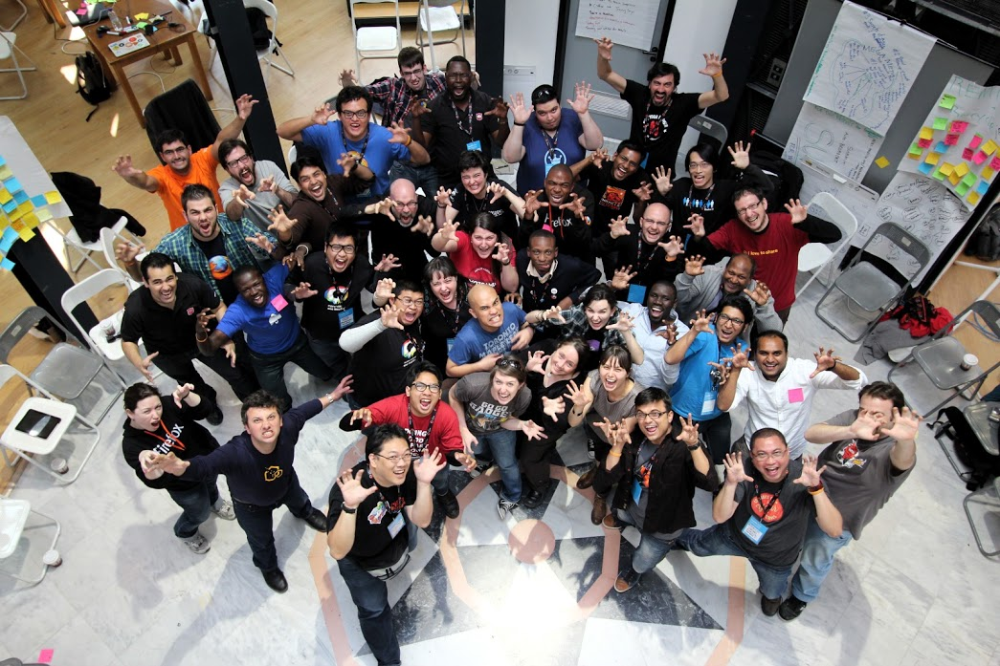

Why do people contribute to open source?
Pierros Papadeas,
@ppapadeas
Why do people contribute to open source?
Who am I?
Pierros Papadeas
Community Architect @ mozilla
@ppapadeas
pierros@mozilla.com
Introduction
Volunteerism motivations
Volunteerism vs. Open Source
Open source motivations
Individuals vs. Groups
Photo by the McClouds
Volunteerism
Photo by angsbacka
Altruism
Photo by jopeattie
Socializing

Photo by ppapadeas
Learning and Development
Photo by opensourceway
Rewards and Recognition
Photo by Benny Chandra
subset
+
extension
Photo by zamzara
Global
Photo by Apollo 17
Access to data
Photo by Semion
Participatory governance
Photo by Daniel Rose
Exclusive
Photo by ruiwen
Not only individuals
Points to consider
Not everything applies to every project
Focus on the ones that fit your project
Contributors in flux - Trial and error
Thanks
Pierros Papadeas
Community Architect @ mozilla
@ppapadeas
Slides
: ppapadeas.github.io/ossummit
Photo by Yortw

 Photo by angsbacka
Photo by angsbacka


{kind=link}
Socializing